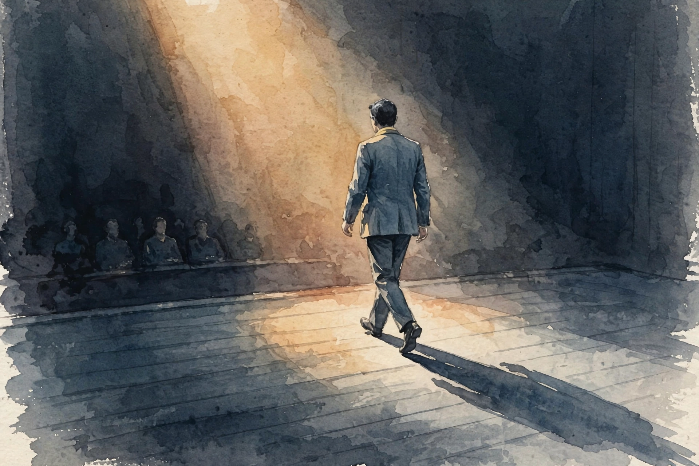
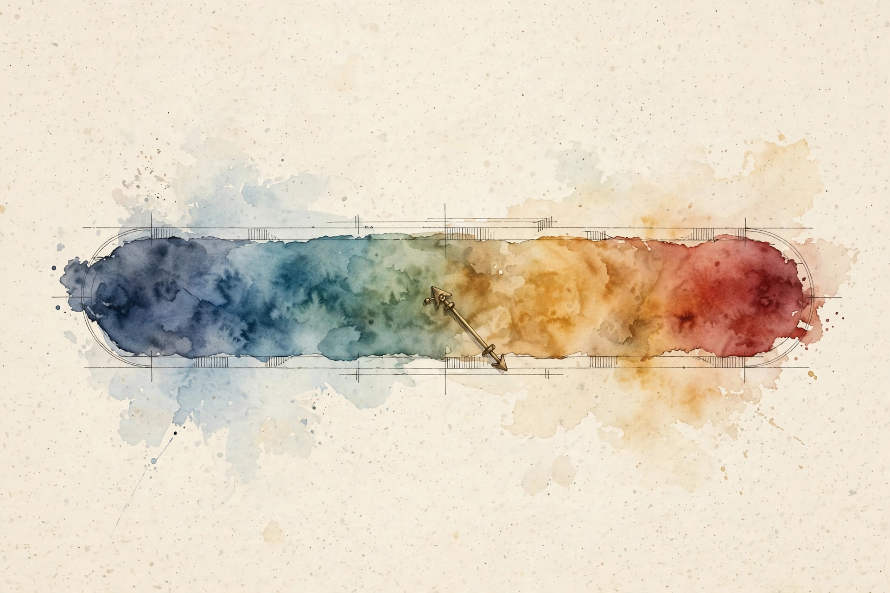

Think Fast Talk Smart · Episode Companion
Rewiring Fear Into Excitement
Matt Abrahams asks Andrew Huberman what fear does to the voice, the hands, and the mind in high-stakes moments. The answer: excitement and dread are the same chemistry. The difference is the label, and the label can be changed with the body faster than with the mind.

Illustration. Step forward, not back: the audience reads approach as confidence. AI-generated watercolor made for this page.
Watch. The official Think Fast Talk Smart episode video. Use the chapter menu above to move through this companion as you listen.
The Wisdom Index: every nugget in this companion
~00:01
Intro: Fear at the Podium
Matt Abrahams, who teaches strategic communication at Stanford's Graduate School of Business, opens with a wish: to be at your best every time you communicate, alert, focused, engaged, with minimal fear. His guest is Andrew Huberman, and the question is neurological. What happens to the voice, the speech, and the hand movements when nerves take over?
Huberman reframes the question before answering it. Nervousness is not a defect in the machine. It is one station along a continuum, and the same station serves excitement. The episode is about learning to work that continuum instead of fearing it.
~00:03
The Autonomic Continuum

Illustration. One continuum from deep sleep to maximum alertness. Excitement and fear share the same station. AI-generated watercolor made for this page.
States of mind and body are not discrete entities, Huberman says. They sit along an autonomic continuum from very high alertness, maximum excitement or fear, all the way down to deep sleep. The physiological responses are purely automatic.
The critical fact: there is no difference between the physiological response to something you are excited about and something you are nervous about. From the neck down, the inner experience is identical. The sympathetic system deploys adrenaline from the adrenal glands, the same chemical called epinephrine in the brain, which creates agitation in the body and focus in the mind.
Excitement vs nervousness: identical physiology
Schematic of his claim. Same chemistry, different label.
Source: Think Fast Talk Smart, Rewiring Fear Into Excitement, ~00:03. The interoceptive experience is identical from the neck down.
Adrenaline was designed to move us. Its primary function is not the predator response but the bias toward ambulation: shifting from one position to a new one, toward things we want or away from things we do not. That is why stillness under adrenaline feels so hard. The chemistry demands motion, and the podium demands stillness.
Nugget 1 · Reframe
Excitement is nervousness with a better label
What happened. The physiology of excitement and dread is identical: same adrenaline, same agitation, same focus. Only the top-down label differs.
Why it matters. You cannot will the adrenaline away, but you can rename it. The reframe costs nothing and changes the whole experience.
The principle. When the heart pounds before the big moment, call it excitement. The body cannot tell the difference.
~00:05
Two Levers From Birth
Despite the automatic responses, Huberman insists the autonomic nervous system is a misnomer. We are born with two specific levers, entry points that require essentially no learning, only knowledge of their existence. With them you can dial down alertness or increase calmness.
He stresses that those are two different things. Lowering alertness and raising calmness are separate dials, not one slider. The episode returns to both dials again and again: fast tools that turn the volume down in the moment, and slow training that raises the floor of calm underneath.
Nugget 2 · Control
Two levers from birth
What happened. Two built-in entry points let anyone control the autonomic system with no training. Dialing down alertness and raising calmness are separate operations.
Why it matters. People try one dial and quit. Knowing there are two doubles the options in the moment.
The principle. Learn both levers before you need them. The podium is no place for first contact.
~00:10
Step Forward: The Dopamine Circuit
There are only three responses to any circumstance, Huberman says: stay still, move forward, or move back. In 2018, his graduate student Lindsay published a paper in Nature on a brain circuit that controls movement toward threats. Not the movement that gets you killed. The adaptive kind: moving toward something you want to do while feeling tremendous arousal about it.
The finding: forward movement under anxiety triggers a deep-brain circuit that releases dopamine. Dopamine is not just the molecule of reward. It is the molecule of motivation and drive. It increases the probability that you will move toward similar goals in the future. Approach under stress literally trains future approach.
The audience reads the movement too. Step back as you start speaking and the room sees retreat, nerves, shyness. Step forward and the room sees confidence, someone stepping into the challenge. The same arousal, two opposite readings, decided by one step.
Nugget 3 · Movement
Move toward, not away
What happened. Three options exist in any moment: stillness, forward, or back. Forward movement under stress fires a dopamine circuit found in the 2018 Nature paper.
Why it matters. The step is both signal and chemistry. The audience reads confidence, and the brain wires motivation for the next attempt.
The principle. When in doubt, step forward. Retreat teaches retreat.
Nugget 4 · Motivation
Dopamine rewards the approach
What happened. Dopamine release during forward movement under anxiety raises the odds of approaching similar goals later. Reward follows the approach, not the outcome.
Why it matters. You do not need the talk to go well for the circuit to learn. You need the step.
The principle. Collect approaches, not applause. The motivation compounds on attempts.
~00:14
Eye Movements Before the Stage
Matt Abrahams notes that you do not even have to move the body. Simulated movement with the eyes has a similar effect. Huberman tells the EMDR origin story: in the early 1980s, the Palo Alto psychologist Francine Shapiro found that walks eased her own anxiety and stress, and she wanted to carry that self-induced calm into the clinic. The result was Eye Movement Desensitization and Reprocessing: moving the eyes side to side.
As a vision scientist, Huberman first thought it was kooky. Then came no fewer than five papers in high-quality journals, including Nature, in mice, non-human primates, and humans, showing that lateralized eye movements suppress the amygdala, the fear center. The effect is long-lasting.
The protocol for speakers: move the eyes side to side for about 30 seconds, which feels like a long time, before the event, never during. It creates a state of reduced alertness from which the approach feels easier. He limits it honestly: it suits specific circumstances like public speaking, not an entire childhood or divorce. Real trauma belongs with a real trauma therapist.
Nugget 5 · Preparation
Thirty seconds before the stage
What happened. Thirty seconds of side-to-side eye movements before a stressful event suppresses the amygdala and lowers alertness. Five papers across species support the mechanism.
Why it matters. The tool works backstage, not onstage. Preparation beats improvisation when the chemistry spikes.
The principle. Arrive early, eyes moving. Walk on already calmer.
~00:17
Two Paths: Calm Now or Capacity Later
Huberman lays out the two approaches to stress. Reduce it in real time, with eye movements before the event or breathing tools in the moment. Or raise the stress threshold, with ice baths, running up steep mountains, and exposure therapy, practices designed to increase cognitive tolerance for high agitation so you can stay still, stay silent, and keep your cool.
The second path has a name: learning to be calm in the storm, sometimes called being comfortable being uncomfortable
. It is a distinctly different practice from the real-time tools. One lowers the wave. The other steadies the boat.
The two approaches to stress
Schematic of the two paths as described in the episode.
Source: Think Fast Talk Smart, Rewiring Fear Into Excitement, ~00:17. The two approaches as Huberman frames them.
Nugget 7 · Training
Comfortable being uncomfortable
What happened. Threshold training, deliberate cold, exertion, and exposure, builds tolerance for high bodily agitation. The skill is stillness and clarity inside the storm.
Why it matters. Real-time tools have limits. When the event outlasts the tool, only capacity carries you.
The principle. Practice discomfort on purpose. The unchosen kind gets easier.
~00:19
The Sigh, Done Right
The fastest real-time tool gets its full explanation here. The physiological sigh was discovered in the 1930s. The common advice, take a deep breath, is exactly the wrong advice. Exhale-emphasized breathing activates the calming arm of the nervous system far faster.
The pattern: inhale through the nose, then sneak in a little more air before exhaling, then one long exhale. One to three cycles. The mechanism is mechanical. The lungs hold billions of tiny air sacs, the alveoli, pressed against the blood supply. Under stress they collapse and flatten. The double inhale reinflates them with maximal air, and the exhale offloads the maximum carbon dioxide, which drives much of the stress response in the blood.
The speed surprises. Within one to three cycles, about five seconds, the autonomic nervous system starts shifting toward calm. It works during exercise too: heart pounding, exhale first, then the double inhale, then the long exhale.
The sigh: seconds, not minutes
Timing from the episode. Hover for detail.
Source: Think Fast Talk Smart, Rewiring Fear Into Excitement, ~00:19. One to three cycles. The shift begins within about five seconds.
~00:22
Use the Body to Control the Mind
Here lands the episode's most quotable line. It is very hard to control the mind with the mind
. At the podium, with nerves peaking, telling yourself the nervousness is excitement barely works. The mind is the broken instrument. So use the body instead.
The slow levers get their mention too. A massage, a hot tub, a sauna, a big meal: filling the gut distends it, the vagus nerve signals the nodose ganglia behind the ear, dopamine releases, and calming brain areas activate. These shift the system slowly and indirectly. The episode's focus stays on the fast ones: breath and eyes, the levers that work in seconds.
Nugget 6 · Body over mind
The body leads the mind
What happened. Mental reframing fails at peak stress because the mind is the broken instrument. Bodily levers, breath and eye movements, bypass it.
Why it matters. People argue with their anxiety and lose. The body does not argue. It obeys physics.
The principle. When the mind will not cooperate, move the body. Calm the chemistry first, reframe second.
~00:24
Deliberate Stress and the Fog
For the threshold path, Huberman returns to his colleague David Spiegel's line, in this episode's variant. The state you find yourself in matters less than how you got there and whether you had anything to do with it. Drive your nervous system into high alertness on purpose, learn to be calm there, and you earn a superpower for the ambushes.
He compares it to a first drive in fog. The first time is scary. The fifth time is still scary, but you were there before, and now you are a good driver. The practice: a very cold shower, one to three minutes, staying calm inside it. Then the deliberate breathing, 25 to 30 deep inhales with big exhales until the system is highly stressed, then empty the lungs completely and sit 15 to 60 seconds, feeling peaceful inside the heightened adrenaline. Never near water. Never for the panic-prone.
~00:27
The Virtual Stage
Illustration. Kill the self-view, work the gaze. Presence on video is a visual skill. AI-generated watercolor made for this page.
Most communication now happens on video, and Huberman calls the setup unnatural for one reason: everyone carries a little mirror on their shoulder. Watching your own face move while you talk to others wrecks presence. Turn the self-view off or move it out of the way.
On gaze, the research is clear. Do not stare at the other person the whole time. Real connection runs on a rhythm: direct gaze, averted gaze, eyes closing, then re-engagement. The look-away is not rudeness. It is where the brain grabs the concept and shapes the sentence.
For screen fatigue, he offers a format: show faces at the start, say hello, let faces collect context for the brain, then drop to pure audio, then return to video before parting. It beats pretending everyone shares a room while staring at thumbnails for an hour.
~00:29
Three Questions
Abrahams closes with his standard three. First: the best communication advice, in five to seven words.
speak to inform and teach not impress
Andrew Huberman · Episode ~00:29
Second: communicators he admires. The poet Wendell Berry, whose best lines bypass cognition for deeper meaning. Joe Strummer of The Clash, for his offstage speech and late-life insights into human beings. And the NYU biologist Claude Desplan, who studies insect vision and whose lectures Huberman calls pure enchantment: a man who makes dragonfly eyes feel like love stories.
Third: the three ingredients of successful communication. Passion, the speaker must love the topic. An organizational logic, a real structure, not bullet points. And clarity: if the audience walks away understanding more than when they arrived, the talk worked.
Nugget 8 · Craft
Teach, do not impress
What happened. His seven-word advice centers the audience: inform and teach, never impress. The recipe is passion, structure, and clarity.
Why it matters. Impressing serves the speaker. Teaching serves the room. Audiences can tell which one you chose.
The principle. Prepare to give, not to shine. Clarity is the compliment you earn.
The episode in seven lines
- Excitement and nervousness are the same adrenaline. Rename the feeling.
- Two levers from birth: dial down alertness, dial up calmness. They are separate.
- Step forward under stress. Dopamine wires the next approach.
- Thirty seconds of side-to-side eye movements, before the event, quiets the amygdala.
- It is very hard to control the mind with the mind. Use the body.
- The sigh beats the deep breath. Emphasize the exhale, feel the shift in seconds.
- Speak to inform and teach, not impress. Passion, structure, clarity.
Distilled from Think Fast Talk Smart, Rewiring Fear Into Excitement with Andrew Huberman (Sep 2024, ~28m). Full episode: youtube.com/watch?v=uAadSbTyGVI. Studies named: Lindsay et al. 2018 (Nature) on the forward-movement circuit, the five lateral-eye-movement papers, and Shapiro's EMDR work.